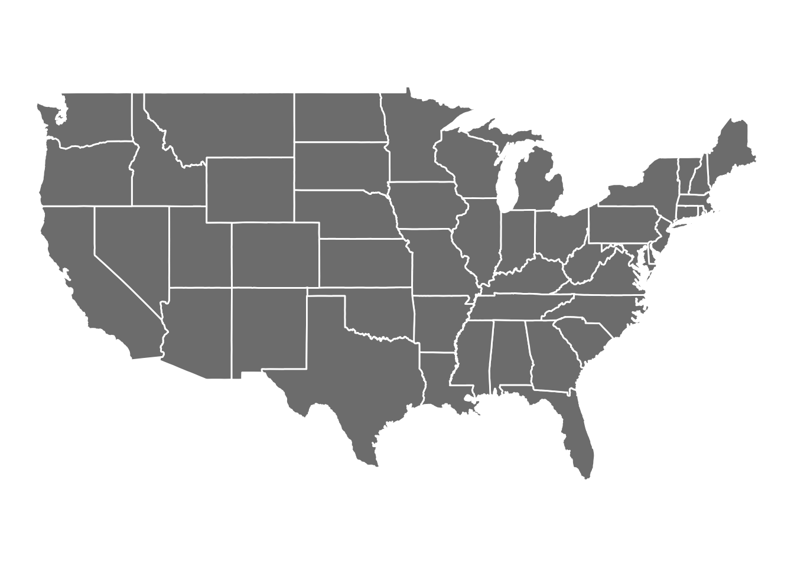

Thesis: First of all, according to our regression graph of MMR vs. Health Care Spending by Years.As the government spending on Health Care increases, the MMR decreases.
As time passes, the maternal mortality rate increases across the U.S., and increasing spending on healthcare will positively decrease the maternal mortality rate.
To polish our visualization graphs, we are going to add more detail and annotation to the existing graph. We want to add a map of the US states with fill by MMR, with a slidey bar for changing the year.
First we can add clear, descriptive titles and captions to your graphs to convey their purpose and provide context. Annotations and highlights are crucial for pointing out key insights or significant data points, which can be achieved using geom_text or geom_label in ggplot2, supported by ggpubr. For interactive elements, consider using the plotly or leaflet packages for dynamic features like a sliding bar to explore changes over time. Ensure your color choices are accessible and consistent, and utilize ggpubr to adjust themes, scales, and legends to make the graphs visually appealing and easy to understand.
library(ggplot2)library(readr)library(dplyr)
Attaching package: 'dplyr'
The following objects are masked from 'package:stats':
filter, lag
The following objects are masked from 'package:base':
intersect, setdiff, setequal, union
data <-read_csv("dataset/Cleaned_Pregnancy_Data.csv")
Rows: 912 Columns: 30
── Column specification ────────────────────────────────────────────────────────
Delimiter: ","
chr (4): state, notes, versiondate, region
dbl (26): year, pregnancyratelt15, pregnancyrate1517, pregnancyrate1819, pre...
ℹ Use `spec()` to retrieve the full column specification for this data.
ℹ Specify the column types or set `show_col_types = FALSE` to quiet this message.
average_data <- data %>%group_by(year, region) %>%summarize(MeanAge =mean(average_age_of_pregnancy, na.rm =TRUE), .groups ='drop')ggplot(average_data, aes(x = year, y = MeanAge, color = region, group = region)) +geom_line() +labs(title ="Trend of Mean Age of Pregnancy Over Time by Region",x ="year",y ="Mean Age of Pregnancy") +theme_minimal() +scale_color_brewer(palette ="Set1")
Graph 1: This graph displays the trend of the mean age of pregnancy over time, categorized by region. From the graph, we can figure out that: In every region, the mean age of pregnancy has increased over time. This suggests that, on average, women are having children at an older age than they did in the past. The ‘West’ region shows the highest mean age of pregnancy over the entire timeline, starting at around 24 years in the 1970s and rising to just below 30 by the 2010s. The ‘Midwest’ and ‘South’ regions appear to have a similar starting point in the 1970s but diverge slightly over time. The ‘South’ follows closely with the ‘West’, but it still has a lower mean age of pregnancy by the 2010s. The ‘Northeast’ region begins with the lowest mean age of pregnancy but increases at a rate similar to the ‘Midwest’, surpassing it around the mid-2000s.
Rows: 1176 Columns: 6
── Column specification ────────────────────────────────────────────────────────
Delimiter: ","
chr (3): state, AverageAge, Region
dbl (3): year, spending, mean_val
ℹ Use `spec()` to retrieve the full column specification for this data.
ℹ Specify the column types or set `show_col_types = FALSE` to quiet this message.
# Print the plotprint(ggplot(data, aes(x = spending, y = AverageAge, color = Region)) +geom_point(aes(size =3), alpha =0.6) +geom_smooth(method ="lm", se =FALSE, aes(group = Region)) +scale_size_identity() +labs(title ="Healthcare Spending vs. Average Age of Pregnancy by Region",x ="Healthcare Spending",y ="Average Age of Pregnancy") +theme_minimal() +facet_wrap(~Region))
Graph 2: This scatter plot compares healthcare spending with the average age of pregnancy by region. Key observations include: There appears to be a positive correlation between healthcare spending and the average age of pregnancy in all regions. This implies that as healthcare spending increases, the average age of pregnancy tends to be higher. The data for the ‘West’ region, shown in purple, indicates a particularly strong positive correlation, suggesting that increased healthcare spending in this region might be closely associated with women having children at older ages. Overall, the graph suggests a trend where regions with higher healthcare spending are associated with older average ages of pregnancy, which could reflect a variety of factors such as access to reproductive health services, birth control, career opportunities, or other socioeconomic factors that allow or encourage women to delay pregnancy.
ggplot(data, aes(x = AverageAge, y = mean_val, size = spending)) +geom_point(alpha =0.6) +facet_wrap(~Region) +labs(title ="Bubble Chart of Average Age, MMR, and Healthcare Spending",x ="Average Age of Pregnancy",y ="MMR (per 100,000 live births)",size ="Healthcare Spending") +theme_minimal()
Graph 3: This bubble chart illustrates the relationship between the average age of pregnancy, maternal mortality ratio (MMR per 100,000 live births), and healthcare spending by region. The x-axis represents the average age of pregnancy, the y-axis represents the MMR, and the bubble size corresponds to healthcare spending, with larger bubbles indicating higher spending.
Observations from the chart: - There appears to be a concentration of data points between the ages of 24 and 30, with varying MMR across the regions. - The Midwest, Northeast, and South regions have clusters with a wide range of MMR values but are generally centered around the same average age of pregnancy. - The West region shows a cluster with a lower MMR in comparison to other regions for a similar average age of pregnancy.
The chart suggests complexity in the relationship between healthcare spending, the average age of pregnancy, and MMR, and it would likely require a deeper analysis to understand the underlying factors and dynamics.
ℹ Google's Terms of Service: <https://mapsplatform.google.com>
Stadia Maps' Terms of Service: <https://stadiamaps.com/terms-of-service/>
OpenStreetMap's Tile Usage Policy: <https://operations.osmfoundation.org/policies/tiles/>
ℹ Please cite ggmap if you use it! Use `citation("ggmap")` for details.
library(patchwork)mapp <-read_csv(here::here("dataset/phc_mmr_combined.csv"), col_types =cols(location_name=col_character(),year_id =col_double(),spending =col_double(),mean_val =col_double())) states_map <-map_data("state")spending_1999 <- mapp %>%filter(year_id ==9) %>%mutate(state =tolower(location_name)) map_spending <-merge(states_map, spending_1999, by.x ="region", by.y ="state", all.x =TRUE)# Create the plotggplot(map_spending, aes(x = long, y = lat, group = group, fill = spending)) +geom_polygon(color ="white") +scale_fill_viridis_c(option ="C", direction =-1) +coord_fixed(1.3) +labs(fill ="spending") +theme_void()

Interactive Geospatial Mapping
Below you can find the code for interactive geospatial maps that allow you to view a visual of our variables of interest over time. It doesn’t work in this blog post due to incompatibilities between shiny and quarto markdown, however it should work for our final pages.